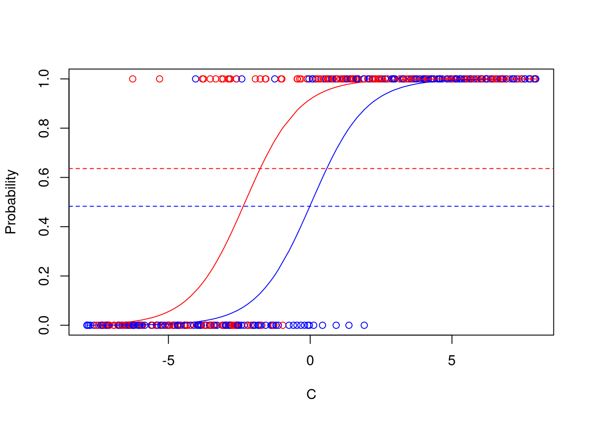

set.seed(3)
N <- 400
C <- sort(runif(N,-8,8)) #non-confounding C
X<-sample(c(0,1),N,replace=TRUE)
beta0<-0
beta1<-log(10)
beta2<-1
##Logistic
etai<-beta0+beta1*X+beta2*C
pii<-exp(etai)/(1+exp(etai))
Ydich <-rbinom(X,size=1,prob=pii)
dat<-data.frame(C,X,Ydich)Noncollapsibility
Assume having a binary outcome \(Y\) and a treatment indicator \(X\) denoting if patient was randomised to treatment (\(X=1\)) or control (\(X=0\)). The analysis would be to fit a simple logistic regression model
\[ P(Y=1|X)=\text{expit}(\alpha_0+\alpha_1X), \]
with \(\text{expit}(\alpha_0+\alpha_1X)=\frac{\exp(\alpha_0+\alpha_1X)}{1+\exp(\alpha_0+\alpha_1X)}\).
Often, we write the model with the linear predictor, that is, the logit transformed expectation,
\[ \boxed{\text{logit}P(Y=1|X)=\alpha_0+{\color{red}\alpha_1}X}. \]
Of course, there will be other factors that influence the probability that \(Y=1\). Assume another variable \(C\) which influences the probability that \(Y=1\). The conditional model would be
\[ \boxed{\text{logit}P(Y=1|X,C)=\beta_0+{\color{red}\beta_1}X+\beta_2C}. \]
Now, under randomisation, \(C\) and \(X\) are (population) independent – that is – there is no confounding of the effect of \(X\) on \(Y\) by \(C\) in place.
Though \(C\) is not a confounder, in general, \({\color{red}\alpha_1 \neq \beta_1}\). The parameters (log odds ratios) in the marginal and conditional model are different. The proof is based on William’s Tower rule for conditional expectations:
\[ \begin{align} E(Y|X)=&E(E(Y|X,C)|X)\\ =&E(\text{expit}(\beta_0+\beta_1X+\beta_2C)|X)\\ \neq &\text{expit}(\beta_0+\beta_1X+\beta_2E(C|X)) \end{align} \]
With other link functions (in log-linear models) and identity (in linear models)), however, the two quantities are equal.
Example
We simulate data from logistic GLM with non-confounding covariate \(C\):
psych::headTail(dat) C X Ydich
1 -7.87 0 0
2 -7.87 0 0
3 -7.86 0 0
4 -7.81 0 0
... ... ... ...
397 7.93 1 1
398 7.94 0 1
399 7.95 0 1
400 7.95 0 1modC<-glm(Ydich~X+C,data=dat,family="binomial")
modM<-glm(Ydich~X,data=dat,family="binomial")Marginal model
equatiomatic::extract_eq(modM)\[ \log\left[ \frac { P( \operatorname{Ydich} = \operatorname{1} ) }{ 1 - P( \operatorname{Ydich} = \operatorname{1} ) } \right] = \alpha + \beta_{1}(\operatorname{X}) \]
Conditional model
equatiomatic::extract_eq(modC)\[ \log\left[ \frac { P( \operatorname{Ydich} = \operatorname{1} ) }{ 1 - P( \operatorname{Ydich} = \operatorname{1} ) } \right] = \alpha + \beta_{1}(\operatorname{X}) + \beta_{2}(\operatorname{C}) \]
Illustrate non-collapsibility
pred<-predict(modM,type="response",se.fit=TRUE)
predgA<-predict(modC,newdata=data.frame(C=C[X==0],X=0),se.fit=TRUE,type="response")
predgB<-predict(modC,newdata=data.frame(C=C[X==1],X=1),se.fit=TRUE,type="response")
plot(C,Ydich,col=c("blue","red")[X+1],ylab="Probability")
lines(sort(C[X==0]),sort(predgA$fit),col="blue")
lines(sort(C[X==1]),sort(predgB$fit),col="red")
abline(a=mean(pii[X==0]),b=0,col="blue",lty=2)
abline(a=mean(pii[X==1]),b=0,col="red",lty=2)
Marginal model
summary(modM)$coef Estimate Std. Error z value Pr(>|z|)
(Intercept) -0.08004 0.1415 -0.5655 0.571710
X 0.63377 0.2040 3.1071 0.001889Conditional model
Effect of \(X\) is larger, even though \(C\) is not a confounder. This is due to non-collapsibility of the odds ratio
summary(modC)$coef Estimate Std. Error z value Pr(>|z|)
(Intercept) -0.05395 0.3208 -0.1682 8.665e-01
X 2.46270 0.5209 4.7280 2.267e-06
C 1.04913 0.1200 8.7453 2.223e-18IPW-model
Estimate inverse probability weights to fit marginal structural models in a point treatment situation.
Weights
library(ipw)
temp <- ipwpoint(exposure=X,family = "binomial",link = "logit",data=dat,numerator =~1,denominator = ~ C)
summary(temp$ipw.weights) Min. 1st Qu. Median Mean 3rd Qu. Max.
0.989 0.994 1.000 1.000 1.006 1.012 dat$sw<-temp$ipw.weightsMarginal structural model
Marginal structural model for the causal effect of \(X\) on \(Y\) corrected for confounding by \(C\) using inverse probability weighting
modW<-glm(Ydich~X,weights=sw,data=dat,family=quasibinomial)
summary(modW)$coef Estimate Std. Error t value Pr(>|t|)
(Intercept) -0.0683 0.1419 -0.4814 0.630474
X 0.6117 0.2043 2.9938 0.002927require("survey")Loading required package: surveyLoading required package: gridLoading required package: MatrixLoading required package: survival
Attaching package: 'survey'The following object is masked from 'package:graphics':
dotchartmsm <- (svyglm(Ydich ~ X, family="binomial",design = svydesign(~ 1, weights =~sw,data = dat)))Warning in eval(family$initialize): non-integer #successes in a binomial glm!summary(msm)
Call:
svyglm(formula = Ydich ~ X, design = svydesign(~1, weights = ~sw,
data = dat), family = "binomial")
Survey design:
svydesign(~1, weights = ~sw, data = dat)
Coefficients:
Estimate Std. Error t value Pr(>|t|)
(Intercept) -0.0683 0.1417 -0.48 0.6301
X 0.6117 0.2042 3.00 0.0029
(Dispersion parameter for binomial family taken to be 1.003)
Number of Fisher Scoring iterations: 4Comparison
modelsummary::modelsummary(models=list("marginal"=modM,"conditional"=modC,"IPW"=modW))| marginal | conditional | IPW | |
|---|---|---|---|
| (Intercept) | -0.080 | -0.054 | -0.068 |
| (0.142) | (0.321) | (0.142) | |
| X | 0.634 | 2.463 | 0.612 |
| (0.204) | (0.521) | (0.204) | |
| C | 1.049 | ||
| (0.120) | |||
| Num.Obs. | 400 | 400 | 400 |
| AIC | 543.4 | 152.6 | |
| BIC | 551.4 | 164.5 | |
| Log.Lik. | -269.718 | -73.275 | |
| F | 9.654 | 38.281 | 8.963 |
| RMSE | 0.49 | 0.23 | 0.49 |
Important
- conditional-marginal=noncollaps+confouding
- IPW-marginal=confounding
- conditional-IPW=noncollaps
Smoking and children weight
str(bwt)'data.frame': 189 obs. of 9 variables:
$ low : int 0 0 0 0 0 0 0 0 0 0 ...
$ age : int 19 33 20 21 18 21 22 17 29 26 ...
$ lwt : int 182 155 105 108 107 124 118 103 123 113 ...
$ smoke : int 0 0 1 1 1 0 0 0 1 1 ...
$ ht : int 0 0 0 0 0 0 0 0 0 0 ...
$ ui : int 1 0 0 1 1 0 0 0 0 0 ...
$ ftv : int 0 3 1 2 0 0 1 1 1 0 ...
$ bwt : int 2523 2551 2557 2594 2600 2622 2637 2637 2663 2665 ...
$ socclass: Factor w/ 3 levels "I","II","III": 2 3 1 1 1 3 1 3 1 1 ...glm_smoke <- glm(low ~ smoke, data = bwt, family = binomial)
summary(glm_smoke)$coef Estimate Std. Error z value Pr(>|z|)
(Intercept) -1.0871 0.2147 -5.062 4.142e-07
smoke 0.7041 0.3196 2.203 2.762e-02glm_multi_1 <- glm(low ~ smoke + socclass, data = bwt, family = binomial)
summary(glm_multi_1)$coef Estimate Std. Error z value Pr(>|z|)
(Intercept) -1.841 0.3529 -5.216 1.828e-07
smoke 1.116 0.3692 3.023 2.507e-03
socclassII 1.084 0.4900 2.212 2.693e-02
socclassIII 1.109 0.4003 2.769 5.618e-03temp <- ipwpoint(exposure=smoke,family = "binomial",link = "logit",data=bwt,
numerator=~1,denominator=~socclass)
summary(temp$ipw.weights) Min. 1st Qu. Median Mean 3rd Qu. Max.
0.723 0.723 0.741 1.000 1.328 2.186 bwt$sw<-temp$ipw.weightsmodW<-glm(low~smoke,weights=sw,data=bwt,family=quasibinomial)
summary(modW)$coef Estimate Std. Error t value Pr(>|t|)
(Intercept) -1.277 0.2270 -5.625 6.696e-08
smoke 0.937 0.3283 2.854 4.798e-03
Important
- conditional-marginal=noncollaps+confouding
- IPW-marginal=confounding
- conditional-IPW=noncollaps
modelsummary::modelsummary(models=list("marginal"=glm_smoke,"conditional"=glm_multi_1,"IPW"=modW))| marginal | conditional | IPW | |
|---|---|---|---|
| (Intercept) | -1.087 | -1.841 | -1.277 |
| (0.215) | (0.353) | (0.227) | |
| smoke | 0.704 | 1.116 | 0.937 |
| (0.320) | (0.369) | (0.328) | |
| socclassII | 1.084 | ||
| (0.490) | |||
| socclassIII | 1.109 | ||
| (0.400) | |||
| Num.Obs. | 189 | 189 | 189 |
| AIC | 233.8 | 228.0 | |
| BIC | 240.3 | 240.9 | |
| Log.Lik. | -114.902 | -109.987 | |
| F | 4.852 | 4.294 | 8.148 |
| RMSE | 0.46 | 0.45 | 0.46 |
The view of potential outcomes
Simulate some data
library(simstudy)
# define the data
defB <- defData(varname = "C", formula =0.27,
dist = "binary")
defB <- defData(defB, varname = "Y0", formula = "-2.5 + 1.75*C",
dist = "binary", link = "logit")
defB <- defData(defB, varname = "Y1", formula = "-1.5 + 1.75*C",
dist = "binary", link = "logit")
defB <- defData(defB, varname = "X", formula = "0.315 + 0.352 *C",
dist = "binary")
defB <- defData(defB, varname = "Y", formula = "Y0 + X * (Y1 - Y0)",
dist = "nonrandom")
defB varname formula variance dist link
<char> <char> <num> <char> <char>
1: C 0.27 0 binary identity
2: Y0 -2.5 + 1.75*C 0 binary logit
3: Y1 -1.5 + 1.75*C 0 binary logit
4: X 0.315 + 0.352 *C 0 binary identity
5: Y Y0 + X * (Y1 - Y0) 0 nonrandom identityset.seed(2002)
Nnew<-1000
dtB <- genData(Nnew, defB)
dtBKey: <id>
id C Y0 Y1 X Y
<int> <int> <int> <int> <int> <int>
1: 1 0 0 0 0 0
2: 2 0 0 1 0 0
3: 3 1 0 0 1 0
4: 4 0 0 0 0 0
5: 5 1 1 1 0 1
---
996: 996 0 0 1 0 0
997: 997 0 0 0 1 0
998: 998 1 0 1 1 1
999: 999 0 0 0 0 0
1000: 1000 1 0 0 1 0True causal effect (based on potential outcomes)
odds <- function (p) {
return((p/(1 - p)))
}
dtB[, log( odds( mean(Y1) ) / odds( mean(Y0) ) )][1] 0.9494Conditional effect
The true conditional causal effect of \(A\) is 1.
mc<-glm(Y ~ X + C , data = dtB, family="binomial")
mc
Call: glm(formula = Y ~ X + C, family = "binomial", data = dtB)
Coefficients:
(Intercept) X C
-2.74 1.21 1.61
Degrees of Freedom: 999 Total (i.e. Null); 997 Residual
Null Deviance: 964
Residual Deviance: 797 AIC: 803This estimate for \(X\) is a good estimate of the conditional effect in the population, based on the potential outcomes at each level of \(C\)
dtB[, .(LOR = log( odds( mean(Y1) ) / odds( mean(Y0) ) ) ), keyby = C]Key: <C>
C LOR
<int> <num>
1: 0 1.104
2: 1 1.067Marginal effect
The marginal estimate is biased both for the conditional effect and the marginal causal effect.
mm<-glm(Y ~ X , data = dtB, family="binomial")
mm
Call: glm(formula = Y ~ X, family = "binomial", data = dtB)
Coefficients:
(Intercept) X
-2.33 1.59
Degrees of Freedom: 999 Total (i.e. Null); 998 Residual
Null Deviance: 964
Residual Deviance: 876 AIC: 880Numerator and Denominator model
numModel <- glm(X ~ 1, data = dtB, family = "binomial")
denModel <- glm(X ~ C, data = dtB, family = "binomial")Stabilized weights by hand
dtB[, pX0 := predict(numModel, type = "response")]
dtB[, pX := predict(denModel, type = "response")]
defB2 <- defDataAdd(varname = "IPW",
formula = "(X*pX0+(1-X)*(1-pX0))/((X * pX) + ((1 - X) * (1 - pX)))",
dist = "nonrandom")
dtB <- addColumns(defB2, dtB)
dtB[1:6]Key: <id>
id C Y0 Y1 X Y pX0 pX IPW
<int> <int> <int> <int> <int> <int> <num> <num> <num>
1: 1 0 0 0 0 0 0.423 0.3347 0.8673
2: 2 0 0 1 0 0 0.423 0.3347 0.8673
3: 3 1 0 0 1 0 0.423 0.6718 0.6297
4: 4 0 0 0 0 0 0.423 0.3347 0.8673
5: 5 1 1 1 0 1 0.423 0.6718 1.7578
6: 6 1 0 0 1 0 0.423 0.6718 0.6297unique(dtB$IPW)[1] 0.8673 0.6297 1.7578 1.2639Stabilized weights with ipw package
tempsw<-ipw::ipwpoint(exposure=X,family="binomial",link="logit",numerator=~1,denominator = ~C,data=dtB)
tempw<-ipw::ipwpoint(exposure=X,family="binomial",link="logit",denominator = ~C,data=dtB)
unique(tempsw$ipw.weights)[1] 0.8673 0.6297 1.7578 1.2639mean(tempsw$ipw.weights)[1] 1unique(tempw$ipw.weights)[1] 1.503 1.489 3.047 2.988mean(tempw$ipw.weights)[1] 2Applying IPW
Unstabilized weights
summary(mw<-glm(Y ~ X , data = dtB, family="binomial", weights = tempw$ipw.weights))$coefWarning in eval(family$initialize): non-integer #successes in a binomial glm! Estimate Std. Error z value Pr(>|z|)
(Intercept) -2.069 0.1002 -20.645 1.076e-94
X 1.081 0.1229 8.801 1.354e-18Stabilized weights
summary(mws<-glm(Y ~ X , data = dtB, family="binomial", weights = tempsw$ipw.weights))$coefWarning in eval(family$initialize): non-integer #successes in a binomial glm! Estimate Std. Error z value Pr(>|z|)
(Intercept) -2.069 0.1319 -15.682 1.996e-55
X 1.081 0.1713 6.312 2.760e-10Comparison
modelsummary::modelsummary(models=list("marginal"=mm,"conditional"=mc,"IPW"=mw,"IPWs"=mws))Warning in eval(family$initialize): non-integer #successes in a binomial glm!
Warning in eval(family$initialize): non-integer #successes in a binomial glm!| marginal | conditional | IPW | IPWs | |
|---|---|---|---|---|
| (Intercept) | -2.333 | -2.736 | -2.069 | -2.069 |
| (0.147) | (0.165) | (0.100) | (0.132) | |
| X | 1.587 | 1.211 | 1.081 | 1.081 |
| (0.180) | (0.191) | (0.123) | (0.171) | |
| C | 1.614 | |||
| (0.183) | ||||
| Num.Obs. | 1000 | 1000 | 1000 | 1000 |
| AIC | 880.1 | 802.5 | 1847.3 | 1004.4 |
| BIC | 889.9 | 817.3 | 1857.1 | 1014.2 |
| Log.Lik. | -438.049 | -398.272 | -921.632 | -500.206 |
| F | 77.828 | 71.500 | 77.460 | 39.837 |
| RMSE | 0.37 | 0.35 | 0.37 | 0.37 |